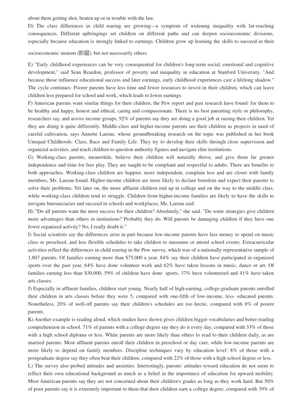
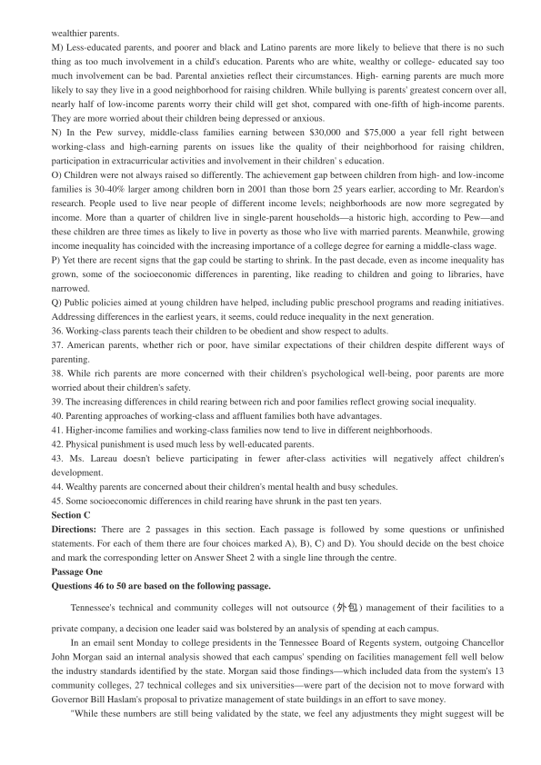
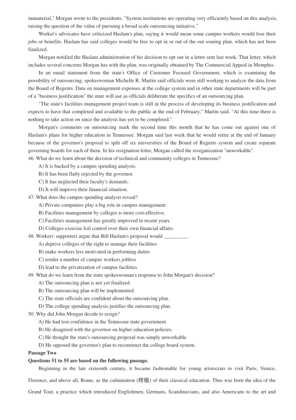
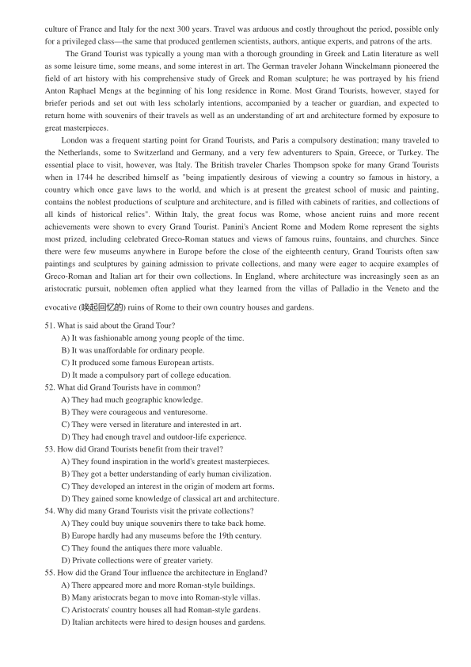

第 1 / 6 页

2017 年5 月大学英语六级考试真题（第3 套）
Part I Writing (30 minutes)
Directions: Suppose you are asked to give advice on whether to attend college at home or abroad, write an essay to
state your opinion. You are required to write at least 150 words but no more than 200 words.
Part II Listening Comprehension
说明：2017 年6 月大学英语六级真题全国共考了两套听力。本套（即第三套）的听力材料与第一套完全一样，
只是选项的顺序不同而已，故本套不再重复给出。
Part III Reading Comprehension (40 minutes)
Section A
Directions: In this section, there is a passage with ten blanks. You are required to select one word for each blank
from a list of choices given in a word bank following the passage. Read the passage through carefully before making
your choices. Each choice in the bank is identified by a letter. Please mark the corresponding letter for each item on
Answer Sheet 2 with a single line through the centre. You may not use any of the words in the bank more than once.
Questions 26 to 35 are based on the following passage.
Let's all stop judging people who talk to themselves. New research says that those who can't seem to keep their
inner monologues ( 独白) in are actually more likely to stay on task, remain __26__ better and show improved
perception capabilities. Not bad, really, for some extra muttering.
According to a series of experiments published in the Quarterly Journal of Experimental Psychology by
professors Gary Lupyan and Daniel Swignley, the act of using verbal clues to __27__ mental pictures helps people
function quicker.
In one experiment, they showed pictures of various objects to twenty __28__ and asked them to find just one of
those, a banana. Half were __29__ to repeat out loud what they were looking for and the other half kept their lips
__30__. Those who talked to themselves found the banana slightly faster than those who didn't, the researchers say.
In other experiments, Lupyan and Swignley found that __31__ the name of a common product when on the hunt for it
helped quicken someone's pace, but talking about uncommon items showed no advantage and slowed you down.
Common research has long held that talking themselves through a task helps children learn, although doing so
when you've __32__ matured is not a great sign of __33__. The two professors hope to refute that idea, __34__ that
just as when kids walk themselves through a process, adults can benefit from using language not just to communicate,
but also to help "augment thinking".
Of course, you are still encouraged to keep the talking at library tones and, whatever you do, keep the
information you share simple, like a grocery list. At any __35__, there's still such a thing as too much information.
A) apparently
B) arrogance
C) brilliance
D) claiming
E) dedicated
F) focused
G) incur
H) instructed
I) obscurely
J) sealed
K) spectators
L) trigger
M) uttering
N) volume
O) volunteers
Section B
Directions: In this section, you are going to read a passage with ten statements attached to it. Each statement contains
information given in one of the paragraphs. Identify the paragraph from which the information is derived. You may
choose a paragraph more than once. Each paragraph is marked with a letter. Answer the questions by marking the
corresponding letter on Answer Sheet 2.
Rich Children and Poor Ones Are Raised Very Differently
A) The lives of children from rich and poor American families look more different than ever before.
B) Well-off families are ruled by calendars, with children enrolled in ballet, soccer and after-school programs,
according to a new Pew Research Center survey. There are usually two parents, who spend a lot of time reading to
children and worrying about their anxiety levels and hectic schedules.
C) In poor families, meanwhile, children tend to spend their time at home or with extended family. They are more
likely to grow up in neighborhoods that their parents say aren't great for raising children, and their parents worry
查看 / 复制本页文字
2017 年5 月大学英语六级考试真题（第3 套） Part I Writing (30 minutes) Directions: Suppose you are asked to give advice on whether to attend college at home or abroad, write an essay to state your opinion. You are required to write at least 150 words but no more than 200 words. Part II Listening Comprehension 说明：2017 年6 月大学英语六级真题全国共考了两套听力。本套（即第三套）的听力材料与第一套完全一样， 只是选项的顺序不同而已，故本套不再重复给出。 Part III Reading Comprehension (40 minutes) Section A Directions: In this section, there is a passage with ten blanks. You are required to select one word for each blank from a list of choices given in a word bank following the passage. Read the passage through carefully before making your choices. Each choice in the bank is identified by a letter. Please mark the corresponding letter for each item on Answer Sheet 2 with a single line through the centre. You may not use any of the words in the bank more than once. Questions 26 to 35 are based on the following passage. Let's all stop judging people who talk to themselves. New research says that those who can't seem to keep their inner monologues ( 独白) in are actually more likely to stay on task, remain __26__ better and show improved perception capabilities. Not bad, really, for some extra muttering. According to a series of experiments published in the Quarterly Journal of Experimental Psychology by professors Gary Lupyan and Daniel Swignley, the act of using verbal clues to __27__ mental pictures helps people function quicker. In one experiment, they showed pictures of various objects to twenty __28__ and asked them to find just one of those, a banana. Half were __29__ to repeat out loud what they were looking for and the other half kept their lips __30__. Those who talked to themselves found the banana slightly faster than those who didn't, the researchers say. In other experiments, Lupyan and Swignley found that __31__ the name of a common product when on the hunt for it helped quicken someone's pace, but talking about uncommon items showed no advantage and slowed you down. Common research has long held that talking themselves through a task helps children learn, although doing so when you've __32__ matured is not a great sign of __33__. The two professors hope to refute that idea, __34__ that just as when kids walk themselves through a process, adults can benefit from using language not just to communicate, but also to help "augment thinking". Of course, you are still encouraged to keep the talking at library tones and, whatever you do, keep the information you share simple, like a grocery list. At any __35__, there's still such a thing as too much information. A) apparently B) arrogance C) brilliance D) claiming E) dedicated F) focused G) incur H) instructed I) obscurely J) sealed K) spectators L) trigger M) uttering N) volume O) volunteers Section B Directions: In this section, you are going to read a passage with ten statements attached to it. Each statement contains information given in one of the paragraphs. Identify the paragraph from which the information is derived. You may choose a paragraph more than once. Each paragraph is marked with a letter. Answer the questions by marking the corresponding letter on Answer Sheet 2. Rich Children and Poor Ones Are Raised Very Differently A) The lives of children from rich and poor American families look more different than ever before. B) Well-off families are ruled by calendars, with children enrolled in ballet, soccer and after-school programs, according to a new Pew Research Center survey. There are usually two parents, who spend a lot of time reading to children and worrying about their anxiety levels and hectic schedules. C) In poor families, meanwhile, children tend to spend their time at home or with extended family. They are more likely to grow up in neighborhoods that their parents say aren't great for raising children, and their parents worry
第 2 / 6 页

about them getting shot, beaten up or in trouble with the law.
D) The class differences in child rearing are growing—a symptom of widening inequality with far-reaching
consequences. Different upbringings set children on different paths and can deepen socioeconomic divisions,
especially because education is strongly linked to earnings. Children grow up learning the skills to succeed in their
socioeconomic stratum (阶层), but not necessarily others.
E) "Early childhood experiences can be very consequential for children's long-term social, emotional and cognitive
development," said Sean Reardon, professor of poverty and inequality in education at Stanford University. "And
because those influence educational success and later earnings, early childhood experiences cast a lifelong shadow."
The cycle continues: Poorer parents have less time and fewer resources to invest in their children, which can leave
children less prepared for school and work, which leads to lower earnings.
F) American parents want similar things for their children, the Pew report and past research have found: for them to
be healthy and happy, honest and ethical, caring and compassionate. There is no best parenting style or philosophy,
researchers say, and across income groups, 92% of parents say they are doing a good job at raising their children. Yet
they are doing it quite differently. Middle-class and higher-income parents see their children as projects in need of
careful cultivation, says Annette Lareau, whose groundbreaking research on the topic was published in her book
Unequal Childhoods: Class, Race and Family Life. They try to develop their skills through close supervision and
organized activities, and teach children to question authority figures and navigate elite institutions.
G) Working-class parents, meanwhile, believe their children will naturally thrive, and give them far greater
independence and time for free play. They are taught to be compliant and respectful to adults. There are benefits to
both approaches. Working-class children are happier, more independent, complain less and are closer with family
members, Ms. Lareau found. Higher-income children are more likely to declare boredom and expect their parents to
solve their problems. Yet later on, the more affluent children end up in college and on the way to the middle class,
while working-class children tend to struggle. Children from higher-income families are likely to have the skills to
navigate bureaucracies and succeed in schools and workplaces, Ms. Lareau said.
H) "Do all parents want the most success for their children? Absolutely," she said. "Do some strategies give children
more advantages than others in institutions? Probably they do. Will parents be damaging children if they have one
fewer organized activity? No, I really doubt it."
I) Social scientists say the differences arise in part because low-income parents have less money to spend on music
class or preschool, and less flexible schedules to take children to museums or attend school events. Extracurricular
activities reflect the differences in child rearing in the Pew survey, which was of a nationally representative sample of
1,807 parents. Of families earning more than $75,000 a year, 84% say their children have participated in organized
sports over the past year, 64% have done volunteer work and 62% have taken lessons in music, dance or art. Of
families earning less than $30,000, 59% of children have done sports, 37% have volunteered and 41% have taken
arts classes.
J) Especially in affluent families, children start young. Nearly half of high-earning, college-graduate parents enrolled
their children in arts classes before they were 5, compared with one-fifth of low-income, less- educated parents.
Nonetheless, 20% of well-off parents say their children's schedules are too hectic, compared with 8% of poorer
parents.
K) Another example is reading aloud, which studies have shown gives children bigger vocabularies and better reading
comprehension in school. 71% of parents with a college degree say they do it every day, compared with 33% of those
with a high school diploma or less. White parents are more likely than others to read to their children daily, as are
married parents. Most affluent parents enroll their children in preschool or day care, while low-income parents are
more likely to depend on family members. Discipline techniques vary by education level: 8% of those with a
postgraduate degree say they often beat their children, compared with 22% of those with a high school degree or less.
L) The survey also probed attitudes and anxieties. Interestingly, parents' attitudes toward education do not seem to
reflect their own educational background as much as a belief in the importance of education for upward mobility.
Most American parents say they are not concerned about their children's grades as long as they work hard. But 50%
of poor parents say it is extremely important to them that their children earn a college degree, compared with 39% of
查看 / 复制本页文字
about them getting shot, beaten up or in trouble with the law. D) The class differences in child rearing are growing—a symptom of widening inequality with far-reaching consequences. Different upbringings set children on different paths and can deepen socioeconomic divisions, especially because education is strongly linked to earnings. Children grow up learning the skills to succeed in their socioeconomic stratum (阶层), but not necessarily others. E) "Early childhood experiences can be very consequential for children's long-term social, emotional and cognitive development," said Sean Reardon, professor of poverty and inequality in education at Stanford University. "And because those influence educational success and later earnings, early childhood experiences cast a lifelong shadow." The cycle continues: Poorer parents have less time and fewer resources to invest in their children, which can leave children less prepared for school and work, which leads to lower earnings. F) American parents want similar things for their children, the Pew report and past research have found: for them to be healthy and happy, honest and ethical, caring and compassionate. There is no best parenting style or philosophy, researchers say, and across income groups, 92% of parents say they are doing a good job at raising their children. Yet they are doing it quite differently. Middle-class and higher-income parents see their children as projects in need of careful cultivation, says Annette Lareau, whose groundbreaking research on the topic was published in her book Unequal Childhoods: Class, Race and Family Life. They try to develop their skills through close supervision and organized activities, and teach children to question authority figures and navigate elite institutions. G) Working-class parents, meanwhile, believe their children will naturally thrive, and give them far greater independence and time for free play. They are taught to be compliant and respectful to adults. There are benefits to both approaches. Working-class children are happier, more independent, complain less and are closer with family members, Ms. Lareau found. Higher-income children are more likely to declare boredom and expect their parents to solve their problems. Yet later on, the more affluent children end up in college and on the way to the middle class, while working-class children tend to struggle. Children from higher-income families are likely to have the skills to navigate bureaucracies and succeed in schools and workplaces, Ms. Lareau said. H) "Do all parents want the most success for their children? Absolutely," she said. "Do some strategies give children more advantages than others in institutions? Probably they do. Will parents be damaging children if they have one fewer organized activity? No, I really doubt it." I) Social scientists say the differences arise in part because low-income parents have less money to spend on music class or preschool, and less flexible schedules to take children to museums or attend school events. Extracurricular activities reflect the differences in child rearing in the Pew survey, which was of a nationally representative sample of 1,807 parents. Of families earning more than $75,000 a year, 84% say their children have participated in organized sports over the past year, 64% have done volunteer work and 62% have taken lessons in music, dance or art. Of families earning less than $30,000, 59% of children have done sports, 37% have volunteered and 41% have taken arts classes. J) Especially in affluent families, children start young. Nearly half of high-earning, college-graduate parents enrolled their children in arts classes before they were 5, compared with one-fifth of low-income, less- educated parents. Nonetheless, 20% of well-off parents say their children's schedules are too hectic, compared with 8% of poorer parents. K) Another example is reading aloud, which studies have shown gives children bigger vocabularies and better reading comprehension in school. 71% of parents with a college degree say they do it every day, compared with 33% of those with a high school diploma or less. White parents are more likely than others to read to their children daily, as are married parents. Most affluent parents enroll their children in preschool or day care, while low-income parents are more likely to depend on family members. Discipline techniques vary by education level: 8% of those with a postgraduate degree say they often beat their children, compared with 22% of those with a high school degree or less. L) The survey also probed attitudes and anxieties. Interestingly, parents' attitudes toward education do not seem to reflect their own educational background as much as a belief in the importance of education for upward mobility. Most American parents say they are not concerned about their children's grades as long as they work hard. But 50% of poor parents say it is extremely important to them that their children earn a college degree, compared with 39% of
第 3 / 6 页

wealthier parents.
M) Less-educated parents, and poorer and black and Latino parents are more likely to believe that there is no such
thing as too much involvement in a child's education. Parents who are white, wealthy or college- educated say too
much involvement can be bad. Parental anxieties reflect their circumstances. High- earning parents are much more
likely to say they live in a good neighborhood for raising children. While bullying is parents' greatest concern over all,
nearly half of low-income parents worry their child will get shot, compared with one-fifth of high-income parents.
They are more worried about their children being depressed or anxious.
N) In the Pew survey, middle-class families earning between $30,000 and $75,000 a year fell right between
working-class and high-earning parents on issues like the quality of their neighborhood for raising children,
participation in extracurricular activities and involvement in their children' s education.
O) Children were not always raised so differently. The achievement gap between children from high- and low-income
families is 30-40% larger among children born in 2001 than those born 25 years earlier, according to Mr. Reardon's
research. People used to live near people of different income levels; neighborhoods are now more segregated by
income. More than a quarter of children live in single-parent households—a historic high, according to Pew—and
these children are three times as likely to live in poverty as those who live with married parents. Meanwhile, growing
income inequality has coincided with the increasing importance of a college degree for earning a middle-class wage.
P) Yet there are recent signs that the gap could be starting to shrink. In the past decade, even as income inequality has
grown, some of the socioeconomic differences in parenting, like reading to children and going to libraries, have
narrowed.
Q) Public policies aimed at young children have helped, including public preschool programs and reading initiatives.
Addressing differences in the earliest years, it seems, could reduce inequality in the next generation.
36. Working-class parents teach their children to be obedient and show respect to adults.
37. American parents, whether rich or poor, have similar expectations of their children despite different ways of
parenting.
38. While rich parents are more concerned with their children's psychological well-being, poor parents are more
worried about their children's safety.
39. The increasing differences in child rearing between rich and poor families reflect growing social inequality.
40. Parenting approaches of working-class and affluent families both have advantages.
41. Higher-income families and working-class families now tend to live in different neighborhoods.
42. Physical punishment is used much less by well-educated parents.
43. Ms. Lareau doesn't believe participating in fewer after-class activities will negatively affect children's
development.
44. Wealthy parents are concerned about their children's mental health and busy schedules.
45. Some socioeconomic differences in child rearing have shrunk in the past ten years.
Section C
Directions: There are 2 passages in this section. Each passage is followed by some questions or unfinished
statements. For each of them there are four choices marked A), B), C) and D). You should decide on the best choice
and mark the corresponding letter on Answer Sheet 2 with a single line through the centre.
Passage One
Questions 46 to 50 are based on the following passage.
Tennessee's technical and community colleges will not outsource (外包) management of their facilities to a
private company, a decision one leader said was bolstered by an analysis of spending at each campus.
In an email sent Monday to college presidents in the Tennessee Board of Regents system, outgoing Chancellor
John Morgan said an internal analysis showed that each campus' spending on facilities management fell well below
the industry standards identified by the state. Morgan said those findings—which included data from the system's 13
community colleges, 27 technical colleges and six universities—were part of the decision not to move forward with
Governor Bill Haslam's proposal to privatize management of state buildings in an effort to save money.
"While these numbers are still being validated by the state, we feel any adjustments they might suggest will be
查看 / 复制本页文字
wealthier parents. M) Less-educated parents, and poorer and black and Latino parents are more likely to believe that there is no such thing as too much involvement in a child's education. Parents who are white, wealthy or college- educated say too much involvement can be bad. Parental anxieties reflect their circumstances. High- earning parents are much more likely to say they live in a good neighborhood for raising children. While bullying is parents' greatest concern over all, nearly half of low-income parents worry their child will get shot, compared with one-fifth of high-income parents. They are more worried about their children being depressed or anxious. N) In the Pew survey, middle-class families earning between $30,000 and $75,000 a year fell right between working-class and high-earning parents on issues like the quality of their neighborhood for raising children, participation in extracurricular activities and involvement in their children' s education. O) Children were not always raised so differently. The achievement gap between children from high- and low-income families is 30-40% larger among children born in 2001 than those born 25 years earlier, according to Mr. Reardon's research. People used to live near people of different income levels; neighborhoods are now more segregated by income. More than a quarter of children live in single-parent households—a historic high, according to Pew—and these children are three times as likely to live in poverty as those who live with married parents. Meanwhile, growing income inequality has coincided with the increasing importance of a college degree for earning a middle-class wage. P) Yet there are recent signs that the gap could be starting to shrink. In the past decade, even as income inequality has grown, some of the socioeconomic differences in parenting, like reading to children and going to libraries, have narrowed. Q) Public policies aimed at young children have helped, including public preschool programs and reading initiatives. Addressing differences in the earliest years, it seems, could reduce inequality in the next generation. 36. Working-class parents teach their children to be obedient and show respect to adults. 37. American parents, whether rich or poor, have similar expectations of their children despite different ways of parenting. 38. While rich parents are more concerned with their children's psychological well-being, poor parents are more worried about their children's safety. 39. The increasing differences in child rearing between rich and poor families reflect growing social inequality. 40. Parenting approaches of working-class and affluent families both have advantages. 41. Higher-income families and working-class families now tend to live in different neighborhoods. 42. Physical punishment is used much less by well-educated parents. 43. Ms. Lareau doesn't believe participating in fewer after-class activities will negatively affect children's development. 44. Wealthy parents are concerned about their children's mental health and busy schedules. 45. Some socioeconomic differences in child rearing have shrunk in the past ten years. Section C Directions: There are 2 passages in this section. Each passage is followed by some questions or unfinished statements. For each of them there are four choices marked A), B), C) and D). You should decide on the best choice and mark the corresponding letter on Answer Sheet 2 with a single line through the centre. Passage One Questions 46 to 50 are based on the following passage. Tennessee's technical and community colleges will not outsource (外包) management of their facilities to a private company, a decision one leader said was bolstered by an analysis of spending at each campus. In an email sent Monday to college presidents in the Tennessee Board of Regents system, outgoing Chancellor John Morgan said an internal analysis showed that each campus' spending on facilities management fell well below the industry standards identified by the state. Morgan said those findings—which included data from the system's 13 community colleges, 27 technical colleges and six universities—were part of the decision not to move forward with Governor Bill Haslam's proposal to privatize management of state buildings in an effort to save money. "While these numbers are still being validated by the state, we feel any adjustments they might suggest will be
第 4 / 6 页

immaterial," Morgan wrote to the presidents. "System institutions are operating very efficiently based on this analysis,
raising the question of the value of pursuing a broad scale outsourcing initiative."
Worker's advocates have criticized Haslam's plan, saying it would mean some campus workers would lose their
jobs or benefits. Haslam has said colleges would be free to opt in or out of the out souring plan, which has not been
finalized.
Morgan notified the Haslam administration of his decision to opt out in a letter sent last week. That letter, which
includes several concerns Morgan has with the plan, was originally obtained by The Commercial Appeal in Memphis.
In an email statement from the state's Office of Customer Focused Government, which is examining the
possibility of outsourcing, spokeswoman Michelle R. Martin said officials were still working to analyze the data from
the Board of Regents. Data on management expenses at the college system and in other state departments will be part
of a "business justification" the state will use as officials deliberate the specifics of an outsourcing plan.
"The state's facilities management project team is still in the process of developing its business justification and
expects to have that completed and available to the public at the end of February," Martin said. "At this time there is
nothing to take action on since the analysis has yet to be completed."
Morgan's comments on outsourcing mark the second time this month that he has come out against one of
Haslam's plans for higher education in Tennessee. Morgan said last week that he would retire at the end of January
because of the governor's proposal to split off six universities of the Board of Regents system and create separate
governing boards for each of them. In his resignation letter, Morgan called the reorganization "unworkable".
46. What do we learn about the decision of technical and community colleges in Tennessee?
A) It is backed by a campus spending analysis.
B) It has been flatly rejected by the governor.
C) It has neglected their faculty's demands.
D) It will improve their financial situation.
47. What does the campus spending analysis reveal?
A) Private companies play a big role in campus management.
B) Facilities management by colleges is more cost-effective.
C) Facilities management has greatly improved in recent years.
D) Colleges exercise foil control over their own financial affairs.
48. Workers' supporters argue that Bill Haslam's proposal would _________.
A) deprive colleges of the right to manage their facilities
B) make workers less motivated in performing duties
C) render a number of campus workers jobless
D) lead to the privatization of campus facilities
49. What do we learn from the state spokeswoman's response to John Morgan's decision?
A) The outsourcing plan is not yet finalized.
B) The outsourcing plan will be implemented.
C) The state officials are confident about the outsourcing plan.
D) The college spending analysis justifies the outsourcing plan.
50. Why did John Morgan decide to resign?
A) He had lost confidence in the Tennessee state government.
B) He disagreed with the governor on higher education policies.
C) He thought the state's outsourcing proposal was simply unworkable.
D) He opposed the governor's plan to reconstruct the college board system.
Passage Two
Questions 51 to 55 are based on the following passage.
Beginning in the late sixteenth century, it became fashionable for young aristocrats to visit Paris, Venice,
Florence, and above all, Rome, as the culmination (终极) of their classical education. Thus was born the idea of the
Grand Tour, a practice which introduced Englishmen, Germans, Scandinavians, and also Americans to the art and
查看 / 复制本页文字
immaterial," Morgan wrote to the presidents. "System institutions are operating very efficiently based on this analysis, raising the question of the value of pursuing a broad scale outsourcing initiative." Worker's advocates have criticized Haslam's plan, saying it would mean some campus workers would lose their jobs or benefits. Haslam has said colleges would be free to opt in or out of the out souring plan, which has not been finalized. Morgan notified the Haslam administration of his decision to opt out in a letter sent last week. That letter, which includes several concerns Morgan has with the plan, was originally obtained by The Commercial Appeal in Memphis. In an email statement from the state's Office of Customer Focused Government, which is examining the possibility of outsourcing, spokeswoman Michelle R. Martin said officials were still working to analyze the data from the Board of Regents. Data on management expenses at the college system and in other state departments will be part of a "business justification" the state will use as officials deliberate the specifics of an outsourcing plan. "The state's facilities management project team is still in the process of developing its business justification and expects to have that completed and available to the public at the end of February," Martin said. "At this time there is nothing to take action on since the analysis has yet to be completed." Morgan's comments on outsourcing mark the second time this month that he has come out against one of Haslam's plans for higher education in Tennessee. Morgan said last week that he would retire at the end of January because of the governor's proposal to split off six universities of the Board of Regents system and create separate governing boards for each of them. In his resignation letter, Morgan called the reorganization "unworkable". 46. What do we learn about the decision of technical and community colleges in Tennessee? A) It is backed by a campus spending analysis. B) It has been flatly rejected by the governor. C) It has neglected their faculty's demands. D) It will improve their financial situation. 47. What does the campus spending analysis reveal? A) Private companies play a big role in campus management. B) Facilities management by colleges is more cost-effective. C) Facilities management has greatly improved in recent years. D) Colleges exercise foil control over their own financial affairs. 48. Workers' supporters argue that Bill Haslam's proposal would _________. A) deprive colleges of the right to manage their facilities B) make workers less motivated in performing duties C) render a number of campus workers jobless D) lead to the privatization of campus facilities 49. What do we learn from the state spokeswoman's response to John Morgan's decision? A) The outsourcing plan is not yet finalized. B) The outsourcing plan will be implemented. C) The state officials are confident about the outsourcing plan. D) The college spending analysis justifies the outsourcing plan. 50. Why did John Morgan decide to resign? A) He had lost confidence in the Tennessee state government. B) He disagreed with the governor on higher education policies. C) He thought the state's outsourcing proposal was simply unworkable. D) He opposed the governor's plan to reconstruct the college board system. Passage Two Questions 51 to 55 are based on the following passage. Beginning in the late sixteenth century, it became fashionable for young aristocrats to visit Paris, Venice, Florence, and above all, Rome, as the culmination (终极) of their classical education. Thus was born the idea of the Grand Tour, a practice which introduced Englishmen, Germans, Scandinavians, and also Americans to the art and
第 5 / 6 页

culture of France and Italy for the next 300 years. Travel was arduous and costly throughout the period, possible only
for a privileged class—the same that produced gentlemen scientists, authors, antique experts, and patrons of the arts.
The Grand Tourist was typically a young man with a thorough grounding in Greek and Latin literature as well
as some leisure time, some means, and some interest in art. The German traveler Johann Winckelmann pioneered the
field of art history with his comprehensive study of Greek and Roman sculpture; he was portrayed by his friend
Anton Raphael Mengs at the beginning of his long residence in Rome. Most Grand Tourists, however, stayed for
briefer periods and set out with less scholarly intentions, accompanied by a teacher or guardian, and expected to
return home with souvenirs of their travels as well as an understanding of art and architecture formed by exposure to
great masterpieces.
London was a frequent starting point for Grand Tourists, and Paris a compulsory destination; many traveled to
the Netherlands, some to Switzerland and Germany, and a very few adventurers to Spain, Greece, or Turkey. The
essential place to visit, however, was Italy. The British traveler Charles Thompson spoke for many Grand Tourists
when in 1744 he described himself as "being impatiently desirous of viewing a country so famous in history, a
country which once gave laws to the world, and which is at present the greatest school of music and painting,
contains the noblest productions of sculpture and architecture, and is filled with cabinets of rarities, and collections of
all kinds of historical relics". Within Italy, the great focus was Rome, whose ancient ruins and more recent
achievements were shown to every Grand Tourist. Panini's Ancient Rome and Modem Rome represent the sights
most prized, including celebrated Greco-Roman statues and views of famous ruins, fountains, and churches. Since
there were few museums anywhere in Europe before the close of the eighteenth century, Grand Tourists often saw
paintings and sculptures by gaining admission to private collections, and many were eager to acquire examples of
Greco-Roman and Italian art for their own collections. In England, where architecture was increasingly seen as an
aristocratic pursuit, noblemen often applied what they learned from the villas of Palladio in the Veneto and the
evocative (唤起回忆的) ruins of Rome to their own country houses and gardens.
51. What is said about the Grand Tour?
A) It was fashionable among young people of the time.
B) It was unaffordable for ordinary people.
C) It produced some famous European artists.
D) It made a compulsory part of college education.
52. What did Grand Tourists have in common?
A) They had much geographic knowledge.
B) They were courageous and venturesome.
C) They were versed in literature and interested in art.
D) They had enough travel and outdoor-life experience.
53. How did Grand Tourists benefit from their travel?
A) They found inspiration in the world's greatest masterpieces.
B) They got a better understanding of early human civilization.
C) They developed an interest in the origin of modem art forms.
D) They gained some knowledge of classical art and architecture.
54. Why did many Grand Tourists visit the private collections?
A) They could buy unique souvenirs there to take back home.
B) Europe hardly had any museums before the 19th century.
C) They found the antiques there more valuable.
D) Private collections were of greater variety.
55. How did the Grand Tour influence the architecture in England?
A) There appeared more and more Roman-style buildings.
B) Many aristocrats began to move into Roman-style villas.
C) Aristocrats' country houses all had Roman-style gardens.
D) Italian architects were hired to design houses and gardens.
查看 / 复制本页文字
culture of France and Italy for the next 300 years. Travel was arduous and costly throughout the period, possible only for a privileged class—the same that produced gentlemen scientists, authors, antique experts, and patrons of the arts. The Grand Tourist was typically a young man with a thorough grounding in Greek and Latin literature as well as some leisure time, some means, and some interest in art. The German traveler Johann Winckelmann pioneered the field of art history with his comprehensive study of Greek and Roman sculpture; he was portrayed by his friend Anton Raphael Mengs at the beginning of his long residence in Rome. Most Grand Tourists, however, stayed for briefer periods and set out with less scholarly intentions, accompanied by a teacher or guardian, and expected to return home with souvenirs of their travels as well as an understanding of art and architecture formed by exposure to great masterpieces. London was a frequent starting point for Grand Tourists, and Paris a compulsory destination; many traveled to the Netherlands, some to Switzerland and Germany, and a very few adventurers to Spain, Greece, or Turkey. The essential place to visit, however, was Italy. The British traveler Charles Thompson spoke for many Grand Tourists when in 1744 he described himself as "being impatiently desirous of viewing a country so famous in history, a country which once gave laws to the world, and which is at present the greatest school of music and painting, contains the noblest productions of sculpture and architecture, and is filled with cabinets of rarities, and collections of all kinds of historical relics". Within Italy, the great focus was Rome, whose ancient ruins and more recent achievements were shown to every Grand Tourist. Panini's Ancient Rome and Modem Rome represent the sights most prized, including celebrated Greco-Roman statues and views of famous ruins, fountains, and churches. Since there were few museums anywhere in Europe before the close of the eighteenth century, Grand Tourists often saw paintings and sculptures by gaining admission to private collections, and many were eager to acquire examples of Greco-Roman and Italian art for their own collections. In England, where architecture was increasingly seen as an aristocratic pursuit, noblemen often applied what they learned from the villas of Palladio in the Veneto and the evocative (唤起回忆的) ruins of Rome to their own country houses and gardens. 51. What is said about the Grand Tour? A) It was fashionable among young people of the time. B) It was unaffordable for ordinary people. C) It produced some famous European artists. D) It made a compulsory part of college education. 52. What did Grand Tourists have in common? A) They had much geographic knowledge. B) They were courageous and venturesome. C) They were versed in literature and interested in art. D) They had enough travel and outdoor-life experience. 53. How did Grand Tourists benefit from their travel? A) They found inspiration in the world's greatest masterpieces. B) They got a better understanding of early human civilization. C) They developed an interest in the origin of modem art forms. D) They gained some knowledge of classical art and architecture. 54. Why did many Grand Tourists visit the private collections? A) They could buy unique souvenirs there to take back home. B) Europe hardly had any museums before the 19th century. C) They found the antiques there more valuable. D) Private collections were of greater variety. 55. How did the Grand Tour influence the architecture in England? A) There appeared more and more Roman-style buildings. B) Many aristocrats began to move into Roman-style villas. C) Aristocrats' country houses all had Roman-style gardens. D) Italian architects were hired to design houses and gardens.
第 6 / 6 页
Part IV Translation (30 minutes)
Directions: For this part, you are allowed 30 minutes to translate a passage from Chinese into English. You should
write your answer on Answer Sheet 2.
唐朝始于618 年，终于907 年，是中国历史上最灿烂的时期。经过近三百年的发展，唐代中国成为世界上
最繁荣的强国，其首都长安是当时世界上最大的都市。这一时期，经济发达、商业繁荣、社会秩序稳定，甚
至边境也对外开放。随着城市化和财富的增加，艺术和文学也繁荣起来。李白和杜甫是以作品简洁自然而著
称的诗人。他们的诗歌打动了学者和普通人的心。即使在今天，他们的许多诗歌仍广为儿童及成人阅读背诵。
查看 / 复制本页文字
Part IV Translation (30 minutes) Directions: For this part, you are allowed 30 minutes to translate a passage from Chinese into English. You should write your answer on Answer Sheet 2. 唐朝始于618 年，终于907 年，是中国历史上最灿烂的时期。经过近三百年的发展，唐代中国成为世界上 最繁荣的强国，其首都长安是当时世界上最大的都市。这一时期，经济发达、商业繁荣、社会秩序稳定，甚 至边境也对外开放。随着城市化和财富的增加，艺术和文学也繁荣起来。李白和杜甫是以作品简洁自然而著 称的诗人。他们的诗歌打动了学者和普通人的心。即使在今天，他们的许多诗歌仍广为儿童及成人阅读背诵。